나는 기획하고,
AI는 일한다
오늘 여러분도 AI 직원을 한 명 뽑습니다. 실습 문장은 복사해서 그대로 붙여넣고, 연수가 끝난 뒤에는 프롬프트 모음과 복습 퀴즈로 다시 정리해 보세요.
저의 직원을 소개합니다
매일 아침 8:30, "문해력 학습지를 만들었습니다."
출근하기 전에 AI가 오늘의 문해력 학습지를 만들어 두었어요. 어떻게 만드는지는 2단계에서 공개합니다.
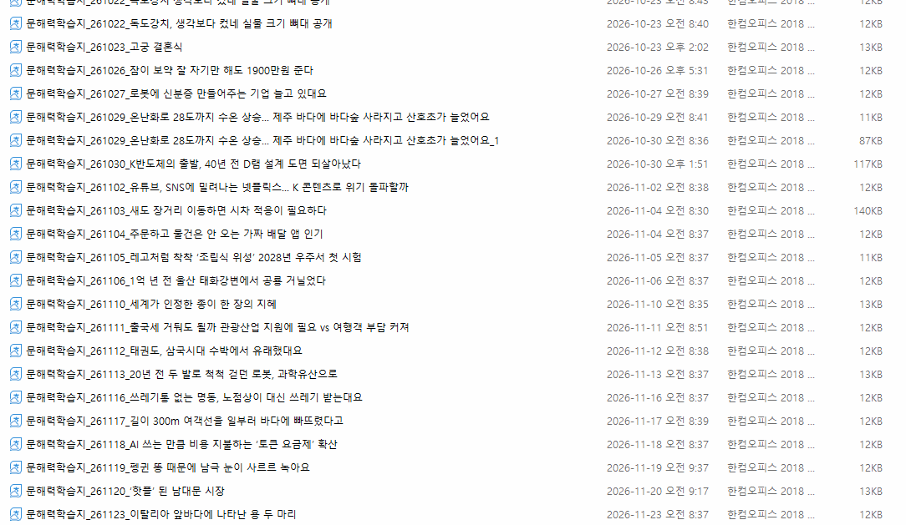
뇌만 있던 AI에게 손과 발이 생겼다
말로 답만 해 줘요. 결과물은 내가 옮기고 고쳐야 해요.
내 PC의 파일을 읽고 만들고 정리해서 일을 끝내요.
오늘 AI에게 맡길 일
반복·행정 업무는 AI 직원에게 맡기고, 나는 업무의 기획자가 됩니다.
- 1내 PC에서 일하게 하기누가기록 · 수업 지도안 · 공문 정리
- 2업무 매뉴얼로 반복 작업하기메신저에서 할 일 정리
- 3AI로 필요한 도구 만들기수업용 웹앱 사례
보안 약속
실습을 시작하기 전에 체크해 주세요.
내 PC에서 일하게 하기
채팅창에서 파일을 받는 데서 끝나지 않고, AI가 내 PC의 폴더에서 직접 일하게 해요. 누가기록 → 수업 지도안 → 공문 정리 순서로 점점 어려운 일을 맡깁니다.
채팅창을 벗어나 내 폴더로
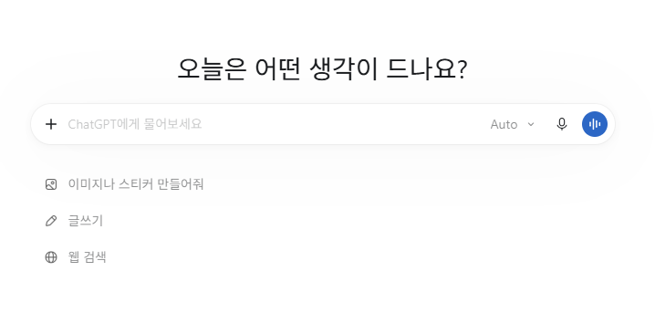
실습 파일 받기
실습에 쓰는 양식과 예시 파일을 한 번에 받아요. 연수 전에 미리 받아 두면 바로 시작할 수 있어요.
Work에서 폴더 열기
강사와 한 단계씩 같이 클릭해요.
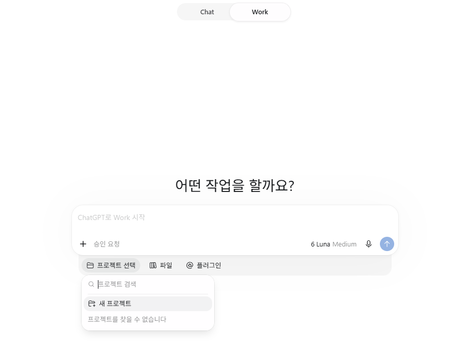
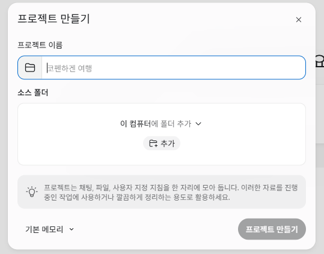
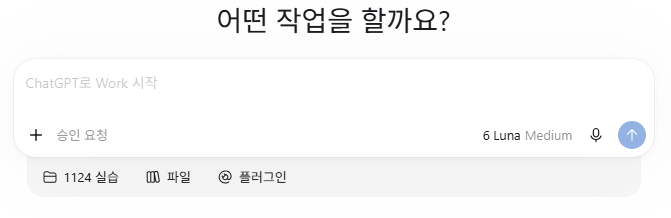
실습 1 · 누가기록
정리를 잘하는 직원에게 양식부터 만들게 해요.
누가기록 양식 만들기
이 폴더에 누가기록용 엑셀 양식을 만들어 줘. 열은 날짜, 번호, 영역, 내용, 후속 조치로 만들고, 영역은 학습·생활·교우관계·기타 중에서 고를 수 있게 해 줘.
누가기록 추가하기
3번, 오늘 쉬는 시간에 친구와 다퉜다가 스스로 사과함. 이 내용을 방금 만든 누가기록 양식에 넣어 줘.
가상 사례 10건 한 번에 추가하기
연결된 폴더에 있는 누가기록 엑셀 파일을 열고, 아래 가상 사례 10건을 기존 열에 맞춰 한 사례당 한 행씩 추가해 줘. 기존 기록은 그대로 두고 같은 파일에 저장해 줘. 관찰한 사실과 학생·보호자가 말한 내용은 출처가 드러나게 써 줘. 이미 한 일은 ‘조치’, 앞으로 할 일은 ‘후속’에 넣어 줘. 나오지 않은 정보는 지어내지 말고 빈칸으로 둬. 앞선 일의 후속 기록도 새 행에 추가해 줘. 저장한 파일을 다시 읽고, 추가한 건수와 아직 확인할 일만 짧게 알려 줘. 1. 11월 16일, 3번. 점심시간에 보드게임 순서를 두고 친구와 언성이 높아졌다. 교사가 두 학생의 말을 차례로 들었다. 3번은 자기 차례가 건너뛰어졌다고 했고, 친구는 두 사람이 정한 순서가 서로 달랐다고 했다. 3번은 목소리를 높인 일에 대해 사과했다. 다음 쉬는 시간에 둘이 정한 순서대로 게임하는지 지켜보기로 했다. 2. 11월 16일, 8번. 과학 모둠 실험에서 10분 동안 실험 도구를 만지거나 결과를 적는 모습이 관찰되지 않았다. 활동 뒤 물어보니 “제가 뭘 맡았는지 몰랐어요”라고 말했다. 교사는 다음 실험부터 모둠별로 역할을 적은 카드를 나눠 주기로 했다. 다음 과학 시간에 8번이 맡은 역할을 수행하는지 확인할 예정이다. 오늘 별도 조치는 하지 않았다. 3. 11월 17일, 12번. 개별 상담에서 발표할 차례가 오면 대답을 알아도 말이 잘 나오지 않는다고 했다. 먼저 짝에게만 설명하고, 전체 발표 때는 원하면 자신이 쓴 답을 읽는 방법을 함께 정했다. 11월 19일 국어 시간 이후에 어떤 방식이 편했는지 다시 묻기로 했다. 4. 11월 17일, 5번. 보호자가 전화로 최근 두 차례 수학 숙제 안내를 찾기 어려웠다고 전했다. 학생은 숙제 내용을 알림장에 적었다고 했으나, 그날 알림장에는 수학 숙제 항목이 비어 있었다. 교사는 공지 위치를 보호자에게 안내했고, 일주일 동안 하교 전 5번과 알림장을 확인하기로 했다. 11월 24일에 확인을 계속할지 결정할 예정이다. 5. 11월 18일, 3번. 지난 보드게임 갈등 이후 두 학생이 다시 함께 게임했다. 시작 전에 3번이 “이번엔 시계 방향으로 하자”고 말했고, 끝날 때까지 순서를 두고 언성이 높아지는 모습은 없었다. 두 학생 모두 따로 확인할 일이 없다고 했다. 이 건은 마무리했다. 6. 11월 18일, 17번. 미술 재료를 정리하던 중 다른 학생이 17번이 자기 색연필을 가져갔다고 말했다. 교사가 확인하니 같은 색과 상표의 색연필이 공동 재료함에도 있었고, 해당 색연필에는 이름표가 없었다. 누가 가져갔는지는 확인하지 못했다. 교사는 색연필을 공동 재료함에 보관했다. 두 학생이 다음 날 자기 색연필 세트를 확인한 뒤 알려 주기로 했다. 7. 11월 19일, 12번. 국어 시간에 짝에게 먼저 답을 설명했다. 전체 공유 때는 손을 들지 않았지만, 수업 뒤 “짝한테 먼저 말하니까 좋았어요”라고 했다. 다음 시간에도 짝에게 먼저 설명하는 방식으로 해 보기로 했다. 전체 발표 여부는 학생이 그날 선택하고, 다음 주에 다시 이야기하기로 했다. 8. 11월 19일, 8번. 과학 실험에서 역할 카드로 기록 담당을 맡았다. 실험 순서에 맞춰 관찰 결과를 두 차례 기록했고, 모둠 친구에게 측정값을 다시 확인했다. 교사는 활동 뒤 잘 수행한 점을 구체적으로 알려 줬다. 역할을 정해 주면 참여가 이어지는지 다음 실험에서 한 번 더 지켜보기로 했다. 9. 11월 20일, 17번. 두 학생이 각자 색연필 세트를 확인했다. 처음 문제를 제기한 학생은 자기 색연필이 필통 안쪽에서 나왔다고 말했다. 교사는 두 학생에게 확인된 내용을 함께 정리해 줬다. 공동 재료함에 보관했던 색연필은 그대로 두었고, 이 건은 마무리했다. 10. 11월 23일, 5번. 보호자가 다시 연락해 지난주 수요일과 목요일에는 숙제 안내를 확인했지만 금요일에는 확인하지 못했다고 했다. 금요일 알림장에는 숙제 내용이 적혀 있었다. 보호자가 어느 단계에서 안내를 놓쳤는지는 아직 확인하지 못했다. 교사는 11월 24일에 학생과 알림장을 확인한 뒤, 학교에서 쓰는 공지 채널도 함께 점검할 예정이다.
이렇게까지도 됩니다: 말로 기록하고 노션에 쌓기
강사는 Claude에 말로 기록하고, 기록은 노션 누가기록 DB에 쌓여요.
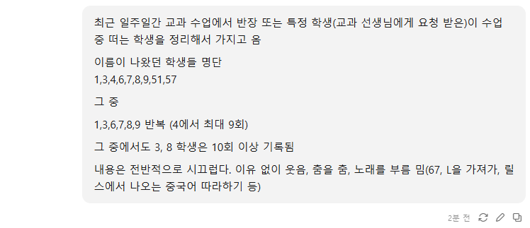
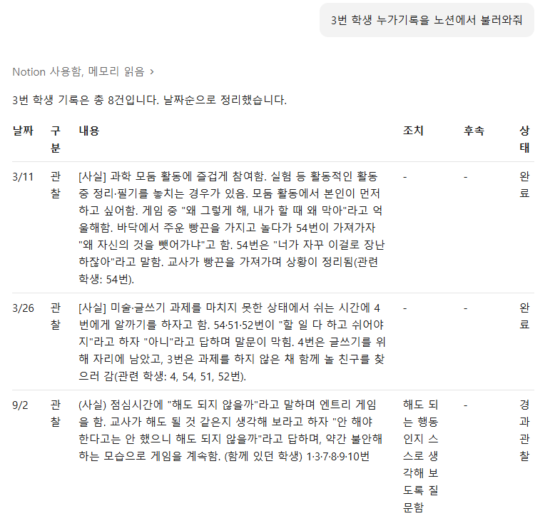
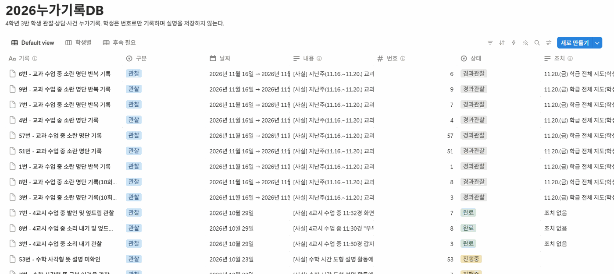
실습 2 · 공개 수업 지도안 만들기
우리 학교 양식을 주면 고칠 일이 줄어들어요.
지도안에 쓸 자료 준비하기
- 양식 · 학교 HWPX
- 참고자료 · 지도서, 작년 예시
- 결과물 · 저장 위치
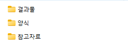
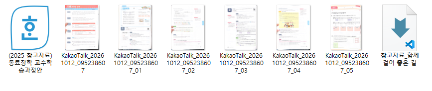
연결한 폴더의 '동료장학' 폴더에 있는 양식 및 참고자료를 사용해서 동료장학 수업 지도안 초안을 만들어 줘. [진행 순서] 아래 단계를 하나씩 진행하고, 각 단계가 끝나면 멈춰서 내 답을 기다린다. 내가 "파일 만들어 줘"라고 말하기 전에는 절대 파일을 만들지 않는다. 1단계 확인: 폴더의 양식과 참고자료를 읽고, 무엇을 찾았는지 3~5줄로 알려 준다. 양식에서 채울 곳(빈칸·빈 괄호·파란색 기울임 안내 문구)과 그대로 둘 곳(제목 틀, 머리말, 칸 이름 등)을 짧게 나눠 보여 준다. 참고자료만으로 알 수 없는 것(몇 번째 차시인지, 일시, 학급, 수업자 등)은 짐작하지 말고 한꺼번에 물어본다. 2단계 수업 설계: 학습 목표, 탐구 질문, 도입·전개·정리 활동 흐름을 짧게 정리해 보여 주고 "이 방향으로 할까요, 바꿀 부분이 있을까요?"라고 묻는다. 3단계 내용 초안: 양식의 칸 순서대로 실제 들어갈 문장을 텍스트로 보여 준다. (한 줄 = 한 문단, 들여쓰기 원칙을 지킨 모양 그대로) 내가 고쳐 달라고 하면 고친 뒤 다시 보여 준다. 4단계 파일 만들기: 내가 "파일 만들어 줘"라고 하면 그때 결과물 폴더에 hwpx 파일을 만든다. [자료] - 양식: 폴더 안의 교수·학습 과정안 hwpx 파일 - 참고자료: 폴더 안의 지도서 내용 md 파일, 예시 과정안 등 - 학년, 교과, 단원, 차시, 쪽수, 일시·장소, 대상 학급, 수업자는 참고자료와 내 답을 바탕으로 채운다. - 예시 과정안이 있으면 그 문단 나누기와 들여쓰기를 그대로 따른다. - 완성한 파일은 결과물 폴더에 "동료장학 지도안 초안.hwpx"로 저장한다. (여러 개면 숫자 붙여서) [보기 좋은 모양 원칙] 1. 한 줄에는 한 가지 내용만 쓰고, 한 줄 = 한 문단(<hp:p>)으로 만든다. 여러 줄을 '•', '/', \n으로 이어 한 문단에 넣지 않는다. 2. 교수·학습 활동 칸은 3단계 들여쓰기를 지킨다. "◉ 활동1 활동 이름" ← 공백 없음 " ◦ 세부 활동" ← 앞 공백 1칸 " - 구체적인 방법" ← 앞 공백 2칸 활동 칸 한 줄은 30자 안팎으로 짧게 쓴다. 3. 자료·유의점 칸은 "㉶교과서"처럼 한 항목에 한 문단으로 쓰고, 빈 문단을 넣어 왼쪽 활동 줄과 위치를 맞춘다. 4. 성취기준은 하나에 한 문단, 탐구 질문은 " - "로 시작하는 1~2개 문단으로 쓴다. 5. 평가 계획의 상·중·하는 한 문장씩, 피드백은 하 수준 학생을 위해 1~2문장으로 쓴다. 6. 양식의 검정 글씨(제목, 머리말, 칸 이름 등)는 완성된 틀이다. 내용·글자 크기·위치를 그대로 둔다. 파란색·기울임 글씨는 작성 안내이므로 지우고 실제 내용으로 바꾼다. 빈칸과 빈 괄호 "( )"도 채운다. [파일이 깨지지 않게 지킬 규칙] 1. 압축을 풀어 Contents/section0.xml만 고친다. 표 구조, 셀 크기, 스타일 번호, 다른 파일은 바꾸지 않는다. 2. 줄을 늘릴 때는 그 셀에 이미 있는 문단을 통째로 복사해 바로 아래에 붙이고 글자만 바꾼다. 3. 빈칸의 <hp:run charPrIDRef="숫자"/>는 <hp:run charPrIDRef="번호"><hp:t>내용</hp:t></hp:run>으로 바꾼다. 문단 끝에 새 <hp:run>을 덧붙이지 않는다. 모든 run에는 charPrIDRef가 있어야 한다. 새로 쓰는 내용은 검정·기울임 없음이어야 한다. 원래 글자모양이 파란색(textColor="#0000FF")이거나 기울임(<hh:italic>)이면, header.xml에서 글꼴·크기는 같고 검정·기울임 없음인 charPr 번호를 찾아 그 번호를 쓴다. header.xml은 고치지 않는다. 4. 내용을 넣거나 새로 만든 문단은 <hp:linesegarray>...</hp:linesegarray>를 통째로 지운다. 5. 글자 안의 & < > 는 & < > 로 바꾼다. 6. 다시 압축할 때 mimetype을 맨 처음에 ZIP_STORED로 넣고, 나머지는 ZIP_DEFLATED로 넣는다. 7. 원본 양식 파일은 덮어쓰지 않는다. [파일 완성 후 스스로 점검] 파일을 만든 뒤 파이썬으로 아래를 확인한다. 점검 과정과 표는 보여 주지 않는다. - section0.xml이 오류 없이 열리는지 - linesegarray가 문단 맨 끝이 아닌 곳에 있는 문단 수 = 0 - charPrIDRef 없는 run 수 = 0 - 한 문단 안에 '•'나 줄바꿈 문자가 들어간 경우 = 0 - 새로 쓴 내용 중 파란색·기울임 글자모양이 남은 run 수 = 0 하나라도 문제가 있으면 스스로 고치고 다시 점검한다. 모두 통과하면 "점검 통과"와 저장 위치만 한 줄로 알려 준다.
내용을 확인한 뒤 Work에 입력하세요.
파일 만들어 줘.
실습 3 · 공문 폴더 정리하기
뒤섞인 공문 파일을 AI가 읽고, 공문 한 건당 폴더 하나로 정리해요.
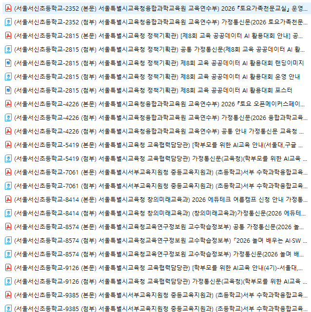
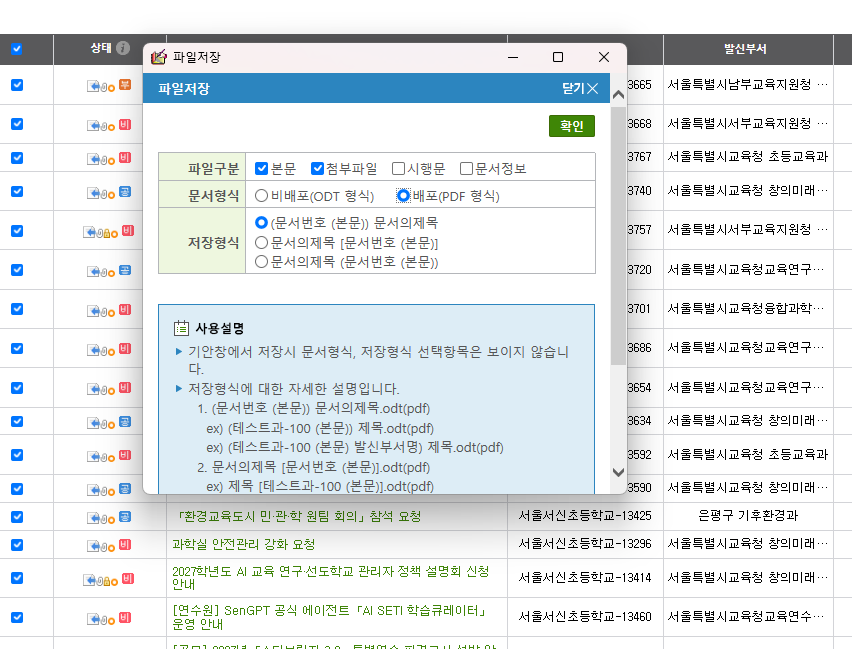
계획을 표로 받고, 확인한 뒤 정리하기
공유한 "공문" 폴더 바로 아래에 학교로 접수된 공문 파일(PDF, HWP, JPG)이 폴더 구분 없이 섞여 있어. 이 파일들을 공문 1건당 폴더 1개로 나눠서 "공문" 폴더 안에 정리해 줘. 모르는 게 있거나 문제가 있으면 물어보고 진행해 [1. 같은 공문끼리 묶는 기준] - 파일명은 "(서울서신초등학교-접수번호 (본문 또는 첨부) 발신기관 부서) 제목" 형식이야. - 맨 앞의 "서울서신초등학교-숫자"(접수번호)가 같은 파일은 모두 같은 공문이야. 이 번호로 묶어 줘. - "(본문)" 파일이 공문 본문이고, "(첨부)" 파일은 그 공문의 첨부파일이야. [2. 폴더 이름 규칙] 형식: YYYY-MM-DD_발신부서-발신문서번호_짧은제목 - 날짜와 발신문서번호는 파일명에 없어. 반드시 "(본문)" PDF를 열어서 하단의 "시행" 줄에서 찾아 줘. (예: "시행 창의미래교육과-2625 (2026. 2. 20.)" → 날짜 2026-02-20, 번호 창의미래교육과-2625) - 파일명에 있는 "서울서신초등학교-1739" 같은 접수번호는 폴더 이름에 쓰지 마. - 짧은제목은 공문 제목에서 행사·사업 이름만 남겨 줘. "가정통신문 발송 안내", "일괄 게시 안내", "공통", 연도 표기 같은 군더더기는 빼 줘. [3. 폴더 이름 예시] - 2026-03-04_교육연수부-241_토요가족천문교실 운영 및 신청 안내 - 2026-03-12_정책기획관-2302_제8회 교육 공공데이터 AI 활용대회 - 2026-07-12_창의미래교육과-11621_에듀테크 여름캠프 신청 안내 - 2026-10-01_교육연수부-2164_K-STEM 과학교육 문화조성 학부모 연수 재안내 [4. 지켜야 할 것] - "공문" 폴더 바로 아래에 있는 파일만 정리해 줘. 다른 폴더는 건드리지 마. - 파일은 복사하지 말고 새 폴더로 옮겨 줘. 정리가 끝나면 "공문" 폴더 바로 아래에는 파일이 하나도 남지 않아야 해. - 파일명은 절대 바꾸지 마. 파일 내용도 수정하지 마. - 파일을 빠뜨리거나 지우지 마. 정리 전과 정리 후의 전체 파일 수가 같아야 해. - 폴더는 한 단계로만 만들어 줘. 폴더 안에 또 폴더를 만들지 마. - Windows에서 폴더 이름에 쓸 수 없는 문자( \ / : * ? " < > | )는 빼 줘. - 본문 PDF가 없거나 시행일·문서번호를 읽을 수 없는 공문은 임의로 채우지 말고, 따로 표시해서 알려 줘. [5. 작업 순서] 1) 먼저 접수번호별로 묶은 결과와 폴더 이름 후보를 표로 보여 줘. (열: 폴더 이름 / 포함 파일 수 / 포함 파일명) 2) 내가 확인하면 그때 폴더를 만들고 파일을 옮겨 줘. 3) 마지막에 전체 파일 수(정리 전 → 정리 후)와 만든 폴더 수를 알려 줘.
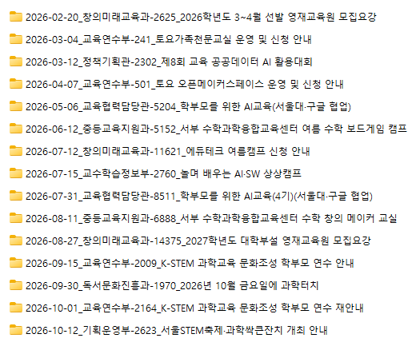
내 PC에도 똑같이
학년말 인수인계나 컴퓨터를 옮기기 전에 써 보세요.
업무 매뉴얼로 반복 작업하기
프로젝트에 기준을 저장하고, 예약으로 반복 실행해요. 매번 설명하지 않아도 같은 기준으로 일하는 직원이 됩니다.
실습 4 · 메시지로 일정 정리하기
쿨메신저 메시지함이 내 PC 어디에 있는지 확인하고, 가상 메시지함으로 6학년 부장의 11~12월 업무를 정리해요.
메시지함 폴더 찾기
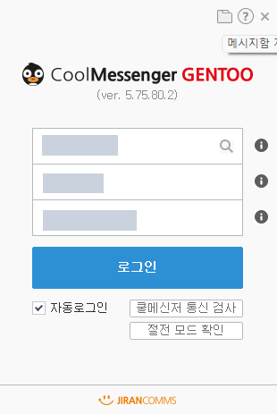
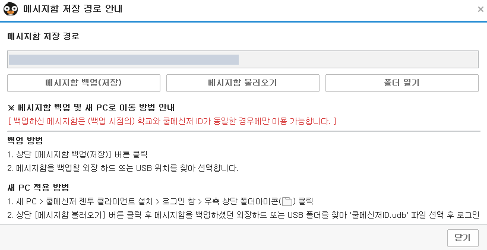
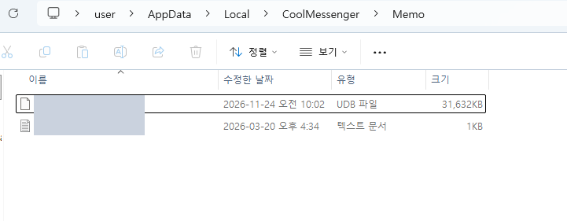
6학년 부장의 11~12월 업무 찾기 · Work에서 가상 .udb 파일이 들어 있는 실습 폴더를 열고 아래 문장을 입력하세요.
나는 6학년 부장교사야. 실습용_쿨메신저_6학년부장.udb의 메시지를 읽고 11~12월 업무를 정리해 줘.
메신저와 스프레드시트를 합치면
실습 5 · 주간 브리핑 예약하기
정해진 시간에 알아서 보고하는 직원을 만들어요.
지금 해볼 작업은 매일이나 일주일에 한 번씩 예약을 걸어 놓기 좋은 작업이야. 보통 어떤 작업을 사람들은 많이 걸어 놓을까?
매일·매주·매달 예약하기 좋은 일을 예로 들어 줘요. 오늘 일정 요약, 업계 뉴스 요약, 다음 주 일정 미리보기 같은 것들이에요.
업계 뉴스 요약하는 걸 해 볼까? 계획을 세워 보자.
주기, 뉴스 건수, 선별 기준 같은 계획을 제안하고 어느 분야로 할지 물어봐요.
교육 쪽으로 해 줘.
매주 월요일 아침, 교육 정책·입시, 학교 현장, 에듀테크와 AI 등 주요 소식 5~7건과 이번 주 지켜볼 이슈로 계획을 정리해 줘요.
계획이 마음에 들면 예약을 설정해요. 강사는 매주 월요일 오전 8시로 걸었어요.
교육 분야 주간 뉴스 요약을 매주 월요일 오전 8시 예약 작업으로 만들고 싶어. - 주기: 매주 월요일 아침, 지난주 뉴스 정리 - 범위: 한국 교육 뉴스를 중심으로, 영향이 큰 해외 소식도 포함 - 주요 주제: 교육 정책·입시, 학교 현장, 에듀테크와 AI, 대학·직업교육 - 선별 기준: 반복 보도는 줄이고, 중요한 변화나 새로운 흐름 위주로 - 요약 형식: 주요 소식 5~7건을 골라 무슨 일이 있었는지, 왜 중요한지를 짧게 설명하고 원문 링크 첨부 - 마무리: 이번 주 교육계에서 지켜볼 이슈 1~3개 예약하기 전에 지난주 뉴스로 한 번 먼저 만들어 보여 줘.
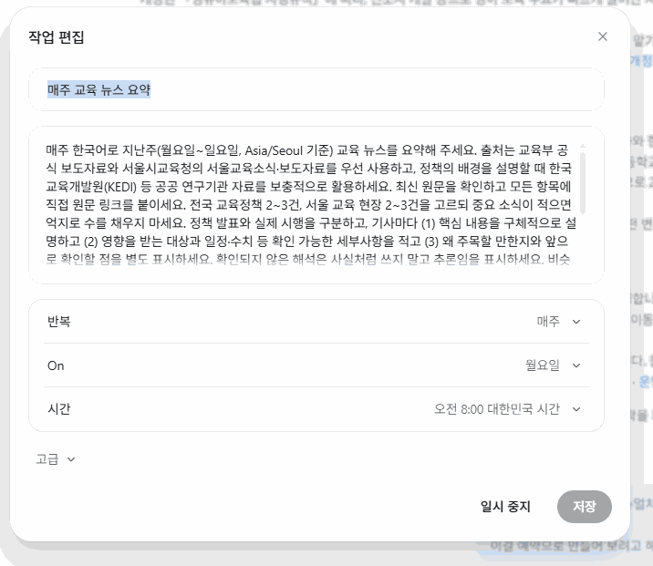
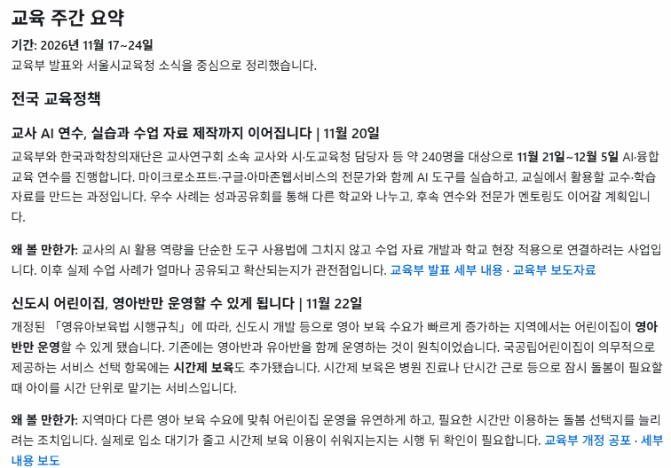
출근 전에 와 있는 문해력 학습지의 비밀
도입에서 본 문해력 학습지는 예약 작업으로 날마다 만들어져요.
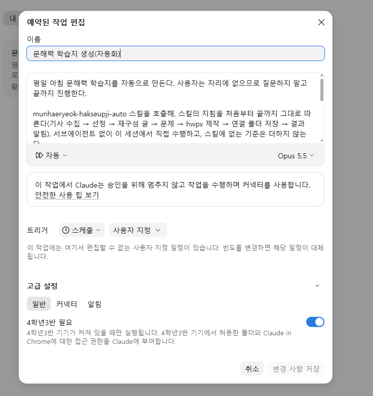
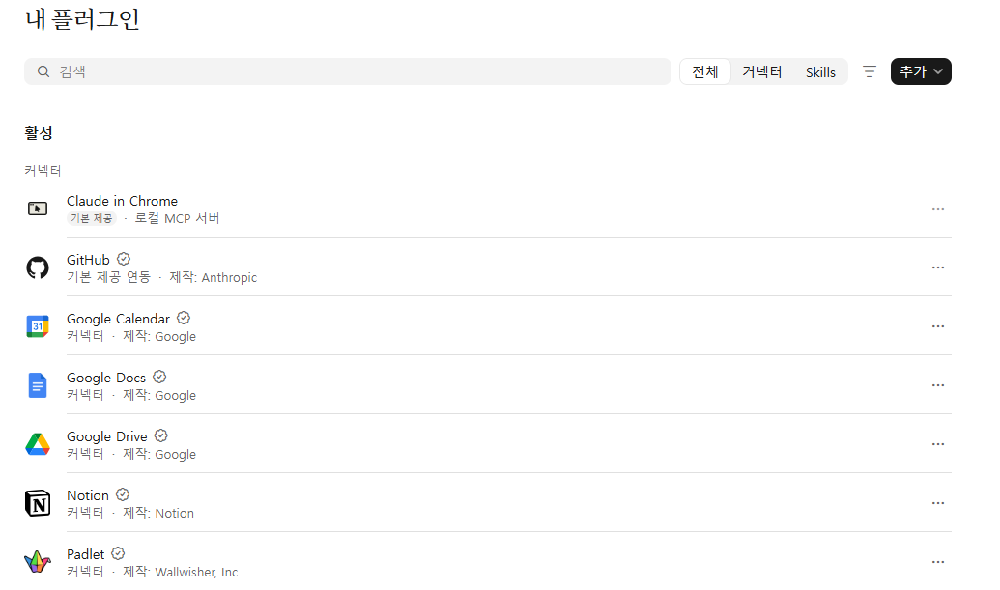
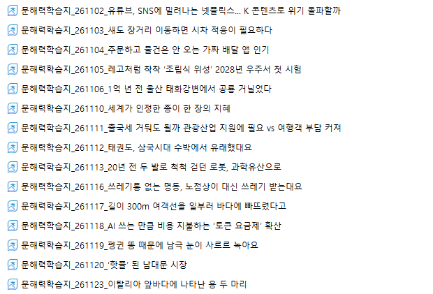
AI로 필요한 도구 만들기
코드를 몰라도 말로 나만의 프로그램을 만들 수 있어요. 오늘은 맛보기만 합니다.
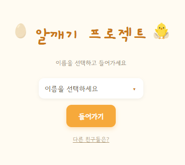
구글 앱스 스크립트알깨기 프로젝트공들이지 않았어도 쓸 만한 웹앱열어 보기 ↗ 구글 앱스 스크립트스피드 스택스 컵 대회대회 운영용 웹앱열어 보기 ↗퇴근해도 일하는 AI 직원: OpenAI dots
자체 클라우드 컴퓨터에서 대화 사이에도 맡은 일을 이어가요. AI 직원은 계속 진화하고 있고, 오늘 배운 단계가 그 기초예요.
이제 내 업무에 적용하기
오늘 AI에게 맡긴 일
- 1내 PC에서 일하게 하기누가기록 · 수업 지도안 · 공문 정리
- 2업무 매뉴얼로 반복 작업하기메신저에서 할 일 정리
- 3AI로 필요한 도구 만들기수업용 웹앱
나는 기획하고, AI는 일한다
제 AI 교무실 조직도
내 AI 직원에게 맡길 첫 업무
AI에 맡겨 보고 싶은 반복 업무를 하나 떠올려 보세요. 세 칸을 채우면 문장이 완성돼요.
프롬프트 모음
오늘 나온 문장을 한곳에 모았어요. 복사해서 내 상황에 맞게 고쳐 쓰세요.
복습
단계별로 한 줄씩 정리했어요. 카드를 눌러 스스로 확인해 보세요.